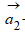
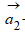
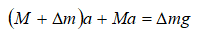
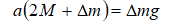
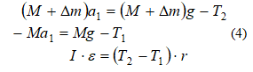

Жұмыстың мақсаты: Бірқалыпты және бірқалыпты үдемелі қозғалыстардың заңдарын зерттеу. Ньютонның екінші заңын тексеру.
Қажетті құрал-жабдықтар: Атвуд машинасы FPМ-05 негізгі және массалары әртүрлі қосымша жүктер, электрондық секундомер.
ҚЫСҚАША ТЕОРИЯСЫ
Дененің қозғалысы әрқашанда ауырлық күшінің өрісінде болады. Ауырлық күші тек қозғалыс барысына ғана емес сонымен қатар қозғалысты зерттегенде алынған тәжірибе нәтижесінің дәлдігіне де көп әсер етеді. Сондықтан бірқалыпты үдемелі қозғалысты зерттегенде, көп жағдайда дененің еріксіз қозғалысын қарастырады. Мұндай жағдайда ауырлық күшінің дененің қозғалысына тигізетін әсері бірнеше рет азайып, тәжірибе нәтижесінің дәлдігі артады. Дененің еріксіз қозғалысын, мысалы, Атвуд машинасының көмгімн туғызып, зрттеуге болады.
Жүктер жүйесінің үйкеліссіз қозғалысы
Ілгерілемелі қозғалыстың негізгі заңдарын пайдаланып,бір-бірімен шығырдан (блок) асыра тасталған әрі салмақсыз, әрі созылмайтын жіңішке жіппен байланысқан массалары mн және ( mн+m )- ге тең екі жүк жүйесінің қозғалысын сипаттайық. (1- сурет)

Егер шығыр (блок) мен жіптің арасында үйкеліс жоқ деп қарасақ, онда екі жүктің қозғалысы сол жүктердің әрқайсысына әсер ететін ауырлық  және жіптің керілу
және жіптің керілу  күштерінің әсерінен болады. Жіп созылмайтын болғандықтан, сол жақтағы жүктің үдеуі
күштерінің әсерінен болады. Жіп созылмайтын болғандықтан, сол жақтағы жүктің үдеуі  , оң жақтағы дененің үдеуі  - ге шама жағынан қарама-қарсы болады. Егер шығырды салмақсыз деп қарастырсақ, онда жіптің сол және оң жақтағы бөліктерінің керілуі бірдей болады. Сондықтан бірінші және екінші жүктерге түсірілген керілу күштері
, оң жақтағы дененің үдеуі  - ге шама жағынан қарама-қарсы болады. Егер шығырды салмақсыз деп қарастырсақ, онда жіптің сол және оң жақтағы бөліктерінің керілуі бірдей болады. Сондықтан бірінші және екінші жүктерге түсірілген керілу күштері  және
және  -де бірдей болады. Оң жақтағы массасы m - ге тең қосымша жүкті салсақ, система қозғалысқа келеді. Еркін түсу үдеуінің бағытын оң деп қарастырып, Ньютонның 2-ші заңын негізге алып, денелердің қозғалыс теңдеулерінің еркін түсу үдеуімен бағыттас координат осіндегі проекциясын былай жазуға болады:
-де бірдей болады. Оң жақтағы массасы m - ге тең қосымша жүкті салсақ, система қозғалысқа келеді. Еркін түсу үдеуінің бағытын оң деп қарастырып, Ньютонның 2-ші заңын негізге алып, денелердің қозғалыс теңдеулерінің еркін түсу үдеуімен бағыттас координат осіндегі проекциясын былай жазуға болады:

мұндағы "a" - системаның үдеуі, м/с2 ;
T керілу күші, Н
g - еркін түсу үдеуі,м/с2 ;
(1)-ші теңдеуден (2)-ші теңдеуді алсақ, онда

Немесе

Осы теңдеулер системасын шешіп, системаның үдеуін таптық:
(2)-ші теңдеуге (3)-ші теңдеуді қойып, жіптің керілу күшін табамыз:
Сонымен, (2) теңдеуден жүктер системасының үдеуінің шамасы қосымша жүктің массасына тура, ал негізгі жүктің массасына кері пропорционал екендігін көруге болады. Жүктер жүйесінің үдеуін қосымша жүктің массасын өзгерту арқылы өзгерткен тиімді. Егер қозғалыс барысында негізгі жүктің үстіндегі жүкті алатын болсақ, онда жүктер жүйесі әрі қарай инерция бойынша тұрақты жылдамдықпен қозғалады.Бұл жылдамдық шама жағынан жүйенің қосымша жүкті алған мезгілдегі жылдамдығына тең.Жүктің керілу күшіне (3) негізгі жүктің массасы m н қосымша жүктің массасы m-ге қарағанда басымырақ әсер етеді. Негізгі жүктің массасының "шекті масса - m нш"деп аталатын шамасында жіптің үзілуі мүмкін. Сондықтан жүктер жүйесінің үдеуін негізгі жүктің массасын өзгерту арқылы өзгерту әрине, өте тиімсіз.
Жүктер жүйесінің нақты жағдайдағы қозғалысы
Нақты жағдайда жүктер жүйесінің қозғалысына шығырдың үйкеліс күшінің моменті әсер етеді. Бұл жағдайда шығырдың сол және оң жақтарындағы жіптің керілу күштері T1 мен T2 шамалары әртүрлі болады. Осының салдарынан шығыр айналмалы қозғалысқа келеді.Сондықтан (1) қозғалыс теңдеуін шығырдың айналмалы қозғалысын сипаттайтын моменттер теңдеуімен толықтыру керек:

Мұндағы: I=a·mr 2 -шығырдың инерция моменті
m-шығырдың массасы
r-шығырдың радиусы;
B-шығырдың бұрыштық үдеуі
a-массаның шығыр бойында орналасу заңдылығын сипаттайтын коэффициент
Жіп шығыр бойымен сырғанамаса, жүк системасының жылдамдығы мен шығырдың жіп оралған деңгейіндегі сызықтық жылдамдығы өзара тең және бағыттас болады. Ал сызықтық үдеу үшін мына шарт орындалады:
Кейінгі (5)- теңдеуді ескере отырып, (4) теңдеуді шеше отырып үдеуді табамыз:
Қондырғының сипаттамасы
Атвуд машинасы 2- ші суретте көрсетілген.
Масштабтық сызғышы бар 2- вертикаль бағана 1- платформаға бекітілген.4- қозғалмайтын кронштейнге жіптің сол жағына ілінген 5- негізгі жүкті ұстап тұруға арналған 3- электромагнит бекітілген. 7- шығырдан асыла тасталған 6- жіртің оң жағына 8- қосымша және екінші 9- негізгі жүк ілінген. 10- және 11- жылжымалы тіремені (кронштейн) вертикаль бағананың кез келген деңгейіне орналастырып, бекітуге болады. Жоғарғы 10- тіремеге электрондық сағатты (ЭС) ток көзіне қосатын микроажыратқыш орналасқан. Оң жақтағы 9 –негізгі жүк 10- жоғарғы тіремеден өткенде 8- қосымша жүк сол тіременің үстінде қалады. Осы мезетте микроқосқыш электрондық сағаттың тізбегін ток көзіне қосады. Екінші 9-негізгі жүк ортадағы тіремеге орналасқан микроажыратқышты басқанда тізбек ажырап электрондық сағат тоқтайды.